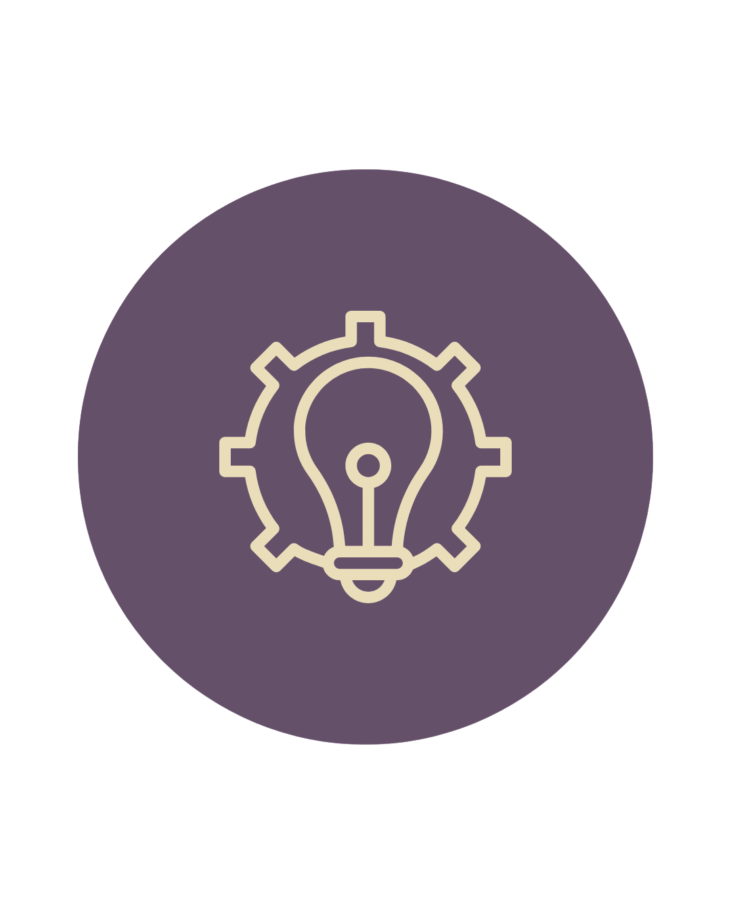
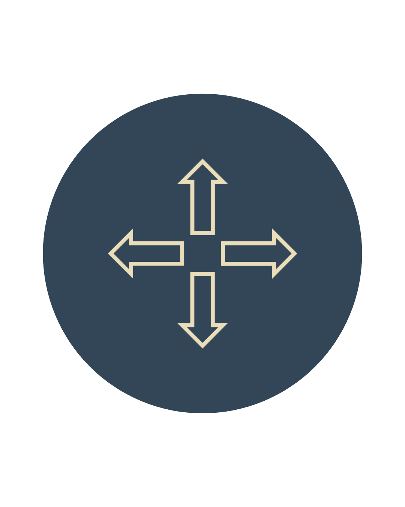
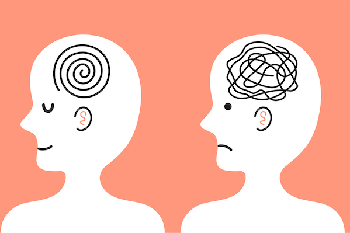

Thoughts on web strategy, structure, and why most websites don't work as well as they should.
Your website is not a design project. It's a system.
Structure, purpose, and why most websites create friction without realizing it.
Why people don't take action online
Why visitors leave, and how better structure creates direction.
Strategy before execution
Why successful digital systems start with strategy, not tools.

Why clarity matters more than aesthetics
Why clear messaging creates stronger digital experiences.
How people actually navigate digital experiences
How people move through digital experiences and make decisions.

What makes a digital experience actually work
The strategy behind websites, funnels, and systems that work together.
Your website is not a design project. It's a system.
Most people approach their website like a creative task. Pick the colors, choose the fonts, add some photos, and call
it done. And honestly, that's what a lot of web designers will deliver. But that's not what a website actually is.
A website is a system. It has a job to do. And when it's not doing that job, no amount of beautiful design is going
to fix it.
Design is the surface. Structure is the foundation.
Think about Apple.com. It's beautiful, yes. But what makes it actually work is everything underneath the aesthetics.
Every page has a clear purpose. Every section guides you toward something specific. Nothing is there just to fill
space or look good. The design serves the structure, not the other way around.
Now think about the last time you landed on a website and left confused. Maybe it looked fine, even professional. But
you couldn't figure out what they actually did, or who it was for, or what you were supposed to do next. That's a
system problem. The design was doing its job. The structure wasn't.
When a website isn't working, the problem is almost never the colors or the fonts. It's that the message isn't clear,
the pages don't flow logically, or there's no obvious next step for the user to take. The surface looks fine. The
foundation is broken.
What a system actually looks like.
A website that works as a system has a few things in common. It communicates what you do and who you do it for within
the first few seconds. It guides the right people toward the right action without making them think too hard. It
works consistently whether you're actively promoting it or not. And every single page has a reason to exist.
That last one matters more than people realize. A lot of websites have pages that are just there because someone
thought they should be. An about page that doesn't build trust. A services page that lists everything but explains
nothing. A contact page with no real reason to reach out. Pages without purpose don't just waste space, they create
friction. And friction is what makes people leave.
Start with purpose, not with visuals.
Before I open any design tool on a new project, I start with questions. What does this business actually need the
site to do? Who is the person landing on it, and what do they need to feel confident enough to take the next step?
What's the one thing they should walk away understanding?
Once those questions have clear answers, design becomes the easy part. Because you're not decorating anymore. You're
making intentional decisions that serve a purpose. Every section, every button, every line of copy has a reason to
be there.
That's the difference between a website that looks good in a portfolio screenshot and one that actually works for a
business day after day. One is a design project. The other is a system.
Why people don't take action online
Most businesses think that getting people to their website is the hardest part. They spend time creating content,
running ads, improving SEO, and finding new ways to bring more visitors in.
But getting someone to visit your website is only the beginning. The harder part is what happens after they arrive. A
person can be interested in your business and still leave without taking action because the website never helped
them understand why they should continue.
The website explains the business, but not the value.
One of the biggest problems with business websites is that they are often written from the company's perspective.
They talk about their experience, their process, and everything they offer, but they forget that the visitor is
trying to answer a different question: "Is this the right solution for me?"
A visitor doesn't know your business the way you do. They don't know why your process is different, what makes your
service valuable, or why they should choose you over another option. The website has to create that understanding
quickly. If someone has to work too hard to figure out why they should care, most people won't stay long enough to
find out.
The journey is not clear.
A lot of websites have all the right pieces but still feel confusing. There is a homepage, a services page, an about
page, and a contact form, but the experience doesn't really guide anyone anywhere.
Think about walking into a physical store. You wouldn't expect to walk in and immediately understand every product,
every option, and every possible next step without any guidance. A good store creates a natural path. Websites work
the same way. The structure should help people understand what they need to know, build trust, and move toward the
next step without feeling lost.
More information does not always create more clarity.
When a website isn't performing well, the first instinct is often to add more. More text. More sections. More
services. More explanations. But adding more information does not automatically make something clearer.
A website should not be a place where everything about a business is placed on one screen. It should be a system that
introduces the right information at the right moment. Some things build trust. Some things answer questions. Some
things encourage action. Knowing where each piece belongs is what creates a better experience.
The website gets attention, but it does not create movement.
A lot of websites look professional enough to make someone stop and look, but they don't create enough momentum for
someone to take the next step. The design works. The branding works. The business might even be great. But the path
from visitor to customer was never intentionally built.
A website that works is not just one that people visit. It is one that helps the right people understand, trust, and
take action. The goal is not to convince everyone. It is to make the experience clear enough that the people who are
already looking for what you offer know exactly where to go next.
Strategy before execution
Most businesses start building their online presence by choosing the tools first. They pick a website platform,
create a landing page, connect an email system, run ads, and start adding pieces as they need them.
And that approach makes sense. Tools are visible. They are the things you can see, compare, and immediately start
working on. But having all the right tools does not automatically create a system that works.
A website, a funnel, and an automation can all be built correctly and still fail if they were never designed around a
clear purpose.
The tools are not the strategy.
Think about how many businesses have a website, a CRM, an email platform, and different marketing channels running at
the same time, but none of them truly work together. Information gets lost. Leads are not followed up with.
Customers have inconsistent experiences.
The problem is not that they need more software. The problem is that the pieces were added without thinking about how
they should connect.
A strong digital system is not created by collecting more tools. It is created by understanding what the business
needs, what the customer journey looks like, and what needs to happen at each step.
Every part of the system should have a purpose.
A funnel is not just a landing page. It is the path someone takes from discovering a business to becoming a customer.
An automation is not just a workflow. It is what keeps that experience moving after someone takes action.
A website is not just a place where information lives. It is one part of the larger system that helps people
understand, trust, and engage with a business.
When each piece is built separately, the experience feels disconnected. When they are designed together, everything
starts working toward the same goal.
Start with the journey, not the technology.
Before deciding what platform to use or what features to add, the most important questions are about the people
moving through the system.
Where are they coming from? What do they need to understand? What action should they take? What should happen after
they take it?
Once the journey is clear, the technology becomes much easier to choose because every tool has a role instead of just
being another piece added to the stack.
The best systems are built intentionally.
A digital presence should not be a collection of disconnected pieces that happen to exist online.
The strongest systems are built with every part supporting the next one. The website, funnel, automation, and data
all work together because they were designed around the same strategy from the beginning.
Execution is important. But without strategy, you are just building more things. With strategy, every piece has a
reason to exist.
Why clarity matters more than aesthetics

Most businesses know that their online presence needs to look professional. They invest time into branding, visuals,
photography, and design because they want people to take them seriously.
And those things matter. A strong visual identity can create trust and make a business feel established. But
aesthetics can only take you so far.
Because people don't make decisions based only on how something looks. They make decisions based on whether they
understand it.
A beautiful experience can still be unclear.
Think about the last time you visited a website, landing page, or online platform that looked impressive but left you
confused. Maybe the design felt modern, but you couldn't immediately understand what the company offered or whether
it was relevant to you.
That is the difference between something that looks good and something that works.
The problem is not usually the visuals. The problem is that the message was never clear enough to support the
experience.
When someone interacts with a business online, they are constantly trying to answer simple questions. What is this?
Is this for me? Why should I trust it? What should I do next?
Clarity is what connects every piece together.
Clear messaging does not only affect the words on a page. It affects the entire system behind the experience.
It influences the structure of a website, the flow of a funnel, the way an offer is presented, and even what happens
after someone becomes a lead or customer.
When the message is unclear, every other part has to work harder. The design has to compensate. The ads have to
explain more. The sales process has to answer questions that should have been answered earlier.
More information does not always mean more understanding.
A common mistake businesses make is trying to communicate everything at once. They want to explain every service,
every feature, every achievement, and every detail because they want people to see the full picture.
But clarity is not about saying more. It is about knowing what matters most at each stage of the journey.
The right information at the right moment creates confidence. Everything else can come later.
The goal is not to impress everyone.
A strong digital experience does not try to make every person interested. It helps the right people quickly recognize
that they are in the right place.
That is where strategy and design come together. The visuals create the first impression, but clarity is what turns
that impression into understanding.
Because the best systems are not the ones that simply get attention. They are the ones that make the next step feel
obvious.
How people actually navigate digital experiences
Most businesses build their online presence by thinking about what they want people to see. They organize information
around their services, their story, and everything they want potential customers to know.
But people don't experience digital platforms that way.
They don't arrive with the same knowledge the business has. They don't read every page, explore every option, or
follow the exact path someone imagined when building it. They are trying to quickly understand whether they are in
the right place and what they should do next.
People don't follow pages. They follow decisions.
When someone visits a website, clicks through a funnel, or interacts with an online experience, they are constantly
making small decisions.
Should I keep going? Does this apply to me? Do I trust this business? Is this worth my time?
Every part of the experience influences those decisions. The message on the first screen. The order of information.
The questions being answered. The action being requested.
A successful digital experience understands that every step has a purpose. It is not just about moving someone from
one page to another. It is about helping them move from uncertainty to confidence.
The journey matters more than the individual pieces.
A lot of businesses focus on individual parts of their online presence. They improve the website, create a new
landing page, update their emails, or change their ads.
But a single piece rarely determines the success of the whole experience.
A great landing page does not help if the traffic coming to it is wrong. A strong offer does not help if the
follow-up process is missing. A beautiful website does not help if visitors never understand what they should do
next.
The pieces only become powerful when they work together.
Good systems remove unnecessary decisions.
Every time someone has to stop and wonder where to go, what something means, or why they should continue, there is
friction.
The goal is not to remove every decision. People still need to choose whether a business is right for them. The goal
is to remove the unnecessary confusion that makes that decision harder.
This is why good digital experiences often feel simple. Not because they have less strategy behind them, but because
the strategy has already done the hard work.
Designing for people means understanding how they think.
The best websites, funnels, and systems are not built around what a business wants to show. They are built around
what people need to understand before they are ready to take action.
Once you understand how people move through an experience, every decision becomes more intentional. The structure
becomes clearer. The messaging becomes stronger. The technology has a purpose.
Because a digital experience is not just something people look at. It is something they move through.
What makes a digital experience actually work
Most businesses think about their online presence as separate pieces. The website is one thing. The marketing is
another. The CRM, emails, automations, and customer journey all live somewhere else.
And that is usually where problems start.
A business can have a great website, effective ads, and powerful tools, but if those pieces are not connected, the
experience becomes fragmented. People fall through the gaps, opportunities are missed, and the business ends up
spending more time fixing problems than improving the system.
The visible experience is only one layer.
When people think about a digital experience, they usually think about the things they can see. The website design.
The landing page. The branding. The content.
But behind every successful digital experience is a system working in the background.
What happens when someone fills out a form? Where does that information go? How does the business follow up? What
happens after someone becomes a customer? How does the team know what is working?
Those details are not separate from the experience. They are part of it.
Every interaction creates the next step.
A website is not the end of the customer journey. It is often the beginning.
Someone discovers a business, learns about an offer, decides whether they trust it, takes an action, and enters the
next part of the process. That journey might include a funnel, an email sequence, a booking system, or an internal
workflow.
When those steps are intentionally connected, the experience feels simple for the customer and more manageable for
the business.
When they are not, even small problems start adding up.
More tools do not create better systems.
It is easy to think that adding another platform, automation, or feature will solve a business problem. But tools are
only useful when they support a clear strategy.
A complicated system with no direction is still a broken system.
The goal is not to build the biggest stack or use the most advanced technology. The goal is to create something that
supports the way the business actually operates.
The best systems work quietly in the background.
A strong digital experience does not require constant manual effort to keep moving. It helps businesses communicate
better, organize information, follow up consistently, and create better experiences for the people they serve.
The website, funnel, automation, and data all have different roles, but they work toward the same purpose.
That is what makes a digital system effective. Not one individual tool or one perfect page, but the way everything
connects together.